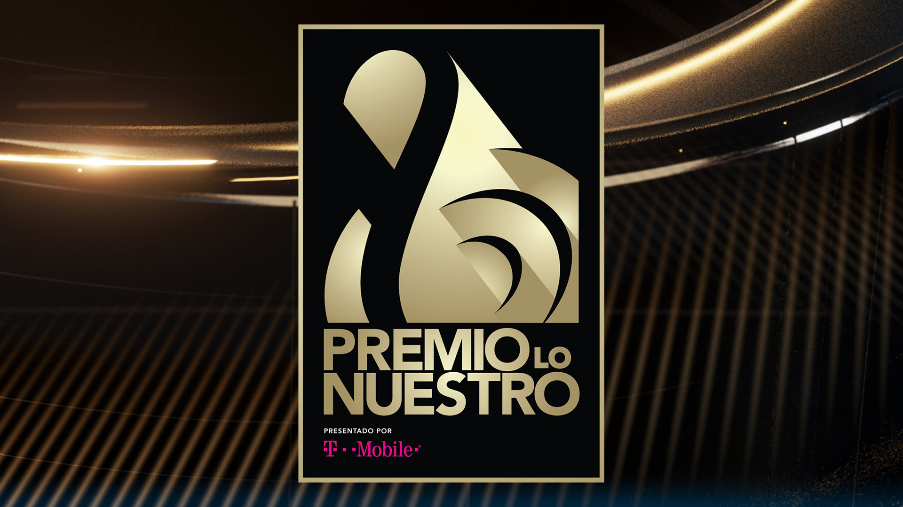
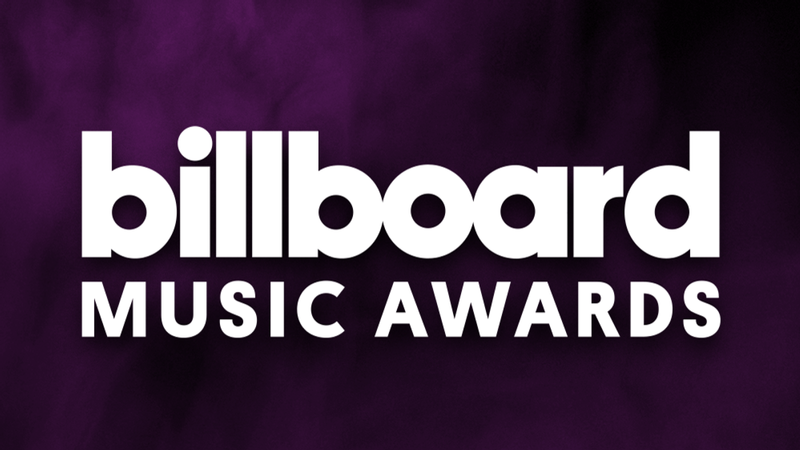
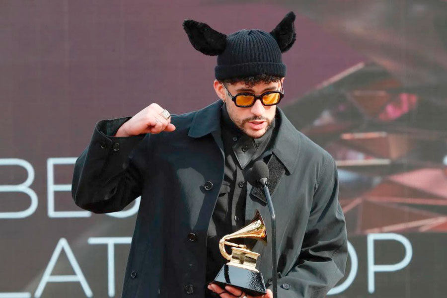

A pesar de que lleva cuatro años en el mundo de la fama musical, Bad Bunny ha sido nomindado a mas de 50 premios, en los que se encuentran Latin Grammys, Premios Lo Nuestro y Billboard Music Awards.
 Es un honor otorgado a los artistas de grabación por álbumes urbanos latinos vocales o instrumentales de calidad en los Premios Grammy, el artista puertoriqueño fue nominado en 2020 con su álbum "YHLQMDLG", y ha sido ganador en dos ocasiones 2019 y 2021 con "X100PRE" y "El Ultimo Tour Del Mundo" respectivamente
Los Billboard Music Awards son unos premios entregados anualmente por Billboard, una revista estadounidense dedicada a la industria musical. Bad Bunny ha sido ganador dos veces del premio a "Mejor Cancion Latina" en el 2021 y 2019, ademas tiene en sus manos por tercer año consecutivo el premio a "Mejor Artista Latino", y muchos mas como "Mejor Album Latino" y "Mejor Cancion Rap".
Es una ceremonia de entrega de premios a «la excelencia en la música latina a elección del público», Benito posee varios premios entre ellos 2 al "Mejor Artista Masculino Del Año" (2022 y 2021); "Album Del Año" 2020 ("Oasis"), 2021("YHLQMDLG") y 2022 ("El Ultimo Tour Del Mundo"), estos son los reconocimientos mas destacados del artista.